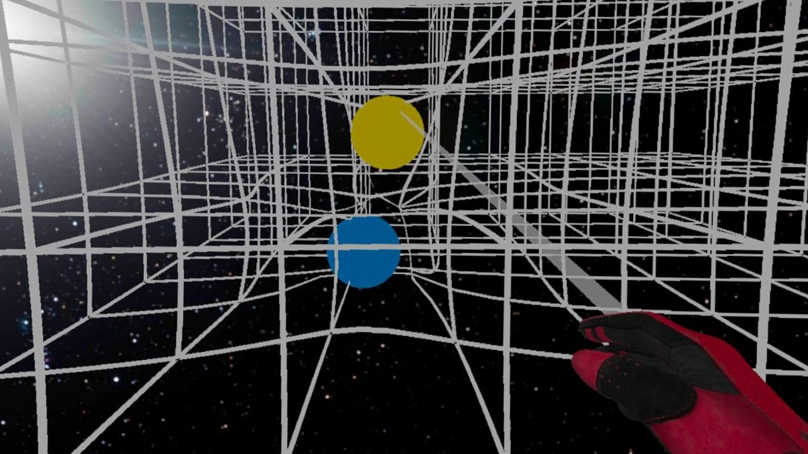
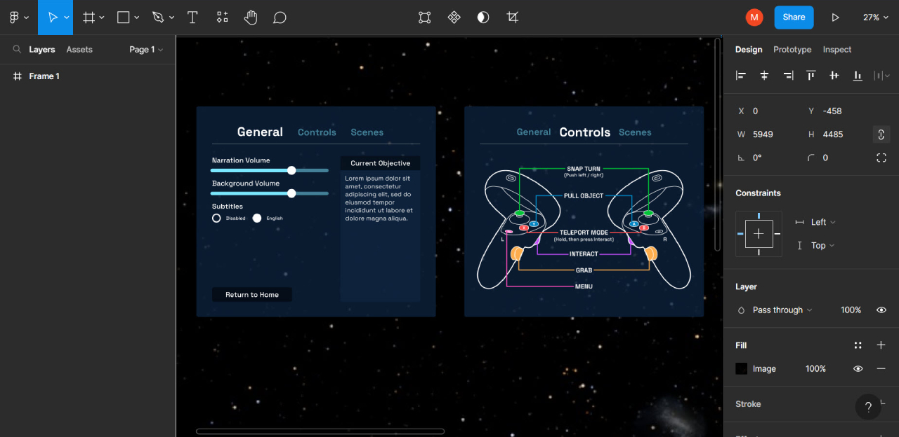
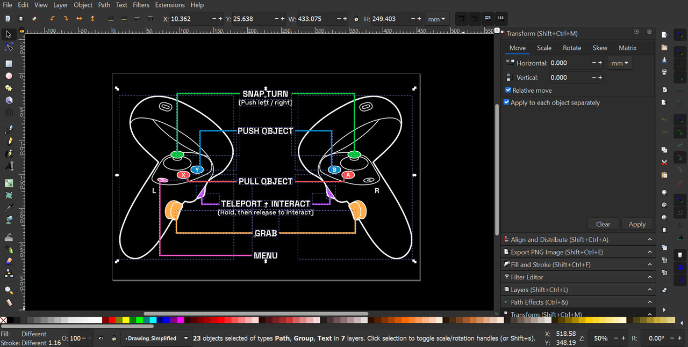

Back to Projects

Physics Outreach and Instruction through New Technologies (POINT) is an Illinois Center for Advanced Studies of the Universe (ICASU) project aimed at generating interest in physics for middle school and high school students through virtual reality.
Since Fall 2022, I have been a member of the VR Production Team, which aims to develop further simulations to explain the fundamental physics of gravity and general relativity, using Unity.
Using C# scripting in Unity, I developed several features for the simulation, most notably 1. a subtitling system that takes in a .srt file as an input and parses tags to generate captions in the appropriate language, 2. a UI manager for the handling of menu interactions, and 3. a tutorial for new users (via coroutines).

With Figma, I designed the current UI for the tutorial and menu, for clarity and easy interactability in VR. Subsequently, I implemented these designs in Unity.

I also contributed through the creation of several 2D assets in Inkscape, namely the controls graphic and a clock for demonstration of how matter affects spacetime. Vector graphics were used to ensure high resolution and ease of editing for future uses.